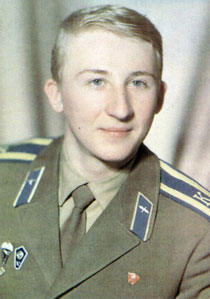

Андрей Анатольевич Завитухин
22 июня 1962 — 31 января 2000
Военный лётчик, майор, командир вертолётного звена. Герой России. Выполнил 187 боевых вылетов. Пример мужества и верности долгу.

Это мемориальный онлайн-музей, посвящённый Андрею Анатольевичу Завитухину — Герою Российской Федерации, майору, военному пилоту вертолёта Ми-24. Здесь вы сможете изучить его биографию, рассмотреть уникальные фотографии, узнать о его подвиге и наградах, а также совершить виртуальный полёт.
Андрей Анатольевич Завитухин
22 июня 1962 — 31 января 2000
Военный лётчик, майор, командир вертолётного звена. Герой России. Выполнил 187 боевых вылетов. Пример мужества и верности долгу.
Узнайте историю жизни Андрея Анатольевича Завитухина, майора, командира вертолётного звена